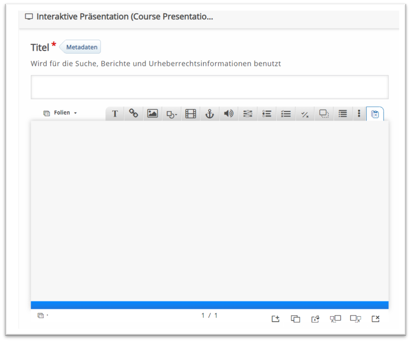
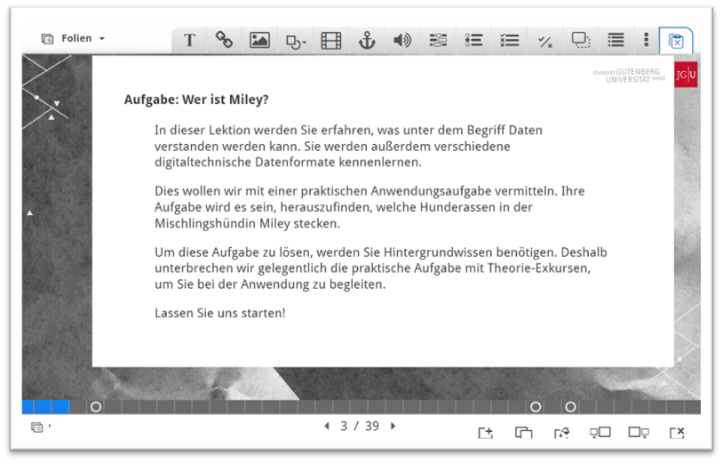
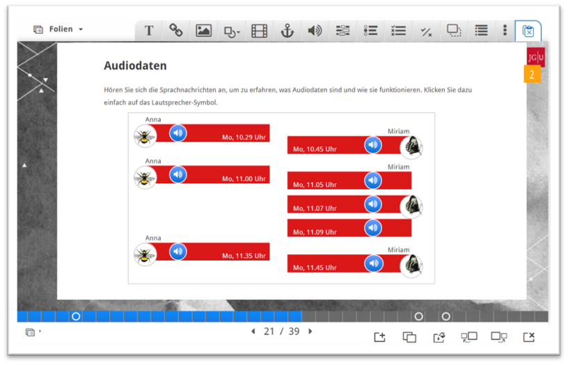
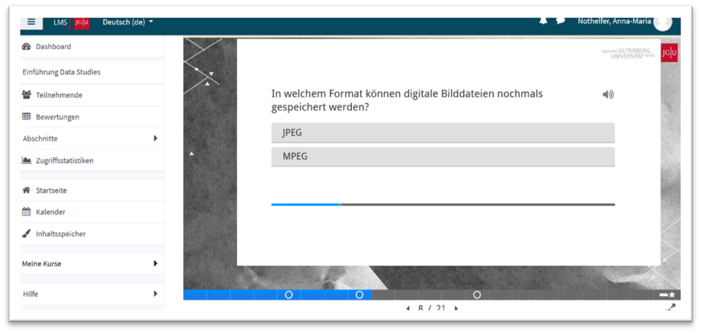

Multimediale Formate mit dem Tool H5P
Toolbeschreibung
H5P ist eine Open-Source-Software, mit der interaktive HTML-basierte Einheiten gestaltet werden können. Das Tool stellt verschiedene Inhaltstypen zur Auswahl. So können Lehrende beispielsweise Quizfragen, Memoryspiele oder interaktive Videos mithilfe des Tools erstellen. Die H5P-Medienformate lassen sich in verschiedene Lernmanagementsysteme sowie Webseiten integrieren.
Für unseren Selbstlernkurs auf Moodle haben wir die Interaktive Präsentation und das Branching Scenario aus dem H5P-Toolpaket gewählt, um Studierende durch drei Themenfelder zu führen. Die Themenfelder sind:
- Was sind Daten?
- Daten in der Wissenschaft
- Daten in der Gesellschaft
Die Verwendung der Interaktiven Präsentation ermöglichte uns hierbei die Darstellung der drei Bereiche in Form von gebündelten und multimedialen Lektionen. So erinnert das Medienformat an eine PowerPoint-Präsentation, durch die Studierende navigieren können. Dabei ist es möglich, Videos, Texte und Grafiken, aber auch Aufgaben wie Multiple- oder Single-Choice-Fragen und Lückentexte auf den Folien einzubinden. Auf diese Weise lassen sich interaktive Lehrmedien gestalten, die wie ein multimediales Kapitel eines digitalen Buches von Studierenden gelesen und bearbeitet werden können.
Das vorgegebene Interface der Interaktiven Präsentation ist dabei wie folgt strukturiert:

In der oberen Leiste können die verschiedenen Medienformate oder Aufgabentypen (zum Beispiel Single-Choice-/Multiple-Choice-Fragen) ausgewählt und eingefügt werden. In der unteren Leiste kann ein Folienhintergrund bestimmt werden. Außerdem lassen sich dort Folien hinzufügen, verschieben oder löschen. Genauere Anleitungen und ein Video-Tutorial dazu, wie die verschiedenen Medienformate in eine Präsentation eingefügt werden können, finden sich auf der Homepage von H5P.
Gefüllt mit Inhalten und unserem Foliendesign sieht unsere exemplarische Präsentation folgendermaßen aus:


Die erstellten H5P-Dateien haben wir über das Plugin „H5P“ in einen Moodlekurs eingefügt und eingebettet. Dort können die Studierenden die Präsentation dann durchgehen.

Ein weiteres Tool des H5P-Toolpakets ist das Branching Scenario, das wir zum Abschluss des Selbstlernkurses für das Durchspielen eines ethischen Dilemmas nutzen. Im Branching Scenario kann ein Pfad mit verschiedenen Verzweigungen angelegt werden. Das Szenario verwenden wir dazu, um Studierenden einen Videoclip zu zeigen, der an bestimmten Stellen stoppt und interaktive Entscheidungsoptionen zur Wahl stellt. Je nach ausgewählter Option schlägt die Geschichte dann einen anderen Pfad ein. Auf diese Weise sollen die möglichen Konsequenzen ethischer Entscheidungen anschaulich vermittelt werden. Die Gestaltung, Nutzung und Wirkung der H5P-Formate ist dementsprechend nicht losgelöst von unserem Lehrkontext zu betrachten, da das mediale Setting stark davon abhängt, welche Inhalte wir in einem bestimmten (institutionellen) Kontext vermitteln möchten. Nachfolgend wird deshalb der Selbstlernkurs als Lehrkontext, in den die H5P-Formate eingebettet sind, näher skizziert.
Voraussetzungen & Zielgruppen
Der Selbstlernkurs ist als niedrigschwelliger Appetizer gedacht, der erste Einblicke in wissenschaftliche Betrachtungsweisen von Daten ermöglichen und Interesse wecken soll. Aus diesem Grund werden Basics vermittelt, für die keine besonderen Vorkenntnisse benötigt werden. Wir möchten den Kurs insbesondere zur Vorbereitung auf unsere Lehrveranstaltungen nutzen, um die angeschnittenen Themen wissenschaftlich vertiefen zu können. Der Kurs kann aber auch von anderen Lehrenden hochschulweit genutzt werden, da wir diesen unter einer CC-Lizenz veröffentlichen möchten. Dabei lassen sich die Lektionen sowie Aufgaben auch einzeln einsetzen und weiterbearbeiten. Die hochschulweite Verwendung wird technisch durch das Format der H5P-Dateien, die leicht in andere Lernmanagementsysteme eingebettet werden können, unterstützt.
Die Medienformate sind allerdings nicht in einer mobilen Ansicht nutzbar, da die multimedialen Impulse damit nicht korrekt dargestellt werden. Es ist deshalb nötig, ein Gerät (zum Beispiel einen Laptop) zu verwenden, das eine Desktop-Ansicht erlaubt.
Kompetenzen
Da der Selbstlernkurs einen Einblick in die verschiedenen Sicht- und Arbeitsweisen auf und mit Daten ermöglichen soll, orientiert sich dieser verstärkt an einem Konzept der Bildung, das interdisziplinäre Perspektiven in der Forschung fokussiert und weniger an messbaren Kompetenzen ausgerichtet ist. Eine dementsprechende Ausarbeitung einer Bildung im Zeitalter des Digitalen hat beispielsweise die Medienwissenschaftlerin Petra Missomelius mit ihrer Monografie Bildung – Mensch – Medien: Mündigkeit im Digitalen (2022) vorgelegt. Darin hebt sie einerseits die selbstverständliche Präsenz des Binären in unseren alltäglichen Lebenspraktiken hervor, die andererseits bewusst reflektiert, ethisch überdacht und dementsprechend gestaltet werden sollten (vgl. Missomelius, 2022: 11 ff.). Die Ambivalenz einer verstärkten Datafizierung unserer Gesellschaft zu erkennen, wird mit dem Selbstlernkurs fokussiert. Das beinhaltet die Fähigkeit, Potenziale der Arbeit mit Daten, aber auch deren Grenzen und darin liegende gesellschaftliche Implikationen zu reflektieren.
Lerninhalte & Methoden
H5P erlaubt das Anlegen von in sich geschlossenen Lektionen, die sich aus verschiedenen Medienformaten zusammensetzen lassen. Unsere erste Lektion führt grundlegend in Fragen rund um eine Definition des Datenbegriffs sowie digitale Datenformate ein. In der zweiten Lektion wird die Nutzung und das Arbeiten mit Daten in der Forschung fokussiert (wie zum Beispiel die Beachtung der FAIR- und CARE-Prinzipien und die Creative-Commons-Lizenzierung). Die dritte Lektion behandelt abschließend ethische Fragen und kulturelle Transformationen mit Bezug auf Datenpraktiken (anhand der Beispiele der Datennutzung in Social Media oder des Einsatzes von künstlicher Intelligenz).
Didaktisch orientiert sich die Gestaltung des Kurses an einer medienästhetischen Erprobung digitaler Tools, die die Qualitäten verschiedener Medienformate zu erforschen und auszuloten versucht. Diesbezüglich sind Tools nicht als rein instrumentelle Vermittlungsformen, sondern als Medien zu betrachten, die das, was mit ihnen ver- und übermittelt werden soll, in seiner Darstellbarkeit aktiv formen und in ihre jeweilige Medialität übersetzen (vgl. Bohnenkamp et al., 2020: 5 ff.). Die Möglichkeit, über die Interaktive Präsentation verschiedene Medienformate digital einzubinden, erlaubt in diesem Sinne auch die gezielte Nutzung verschiedener medialer Inszenierungsformen, wie zum Beispiel die Verflechtung von Videos, Texten und interaktiven Aufgaben, die gebündelt ein Themenfeld repräsentieren. So nutzen wir beispielsweise Texte, wenn es um die Erklärung von Begriffen geht, und greifen auf Videos zurück, um konkrete Anwendungsbeispiele aus dem Forschungsalltag verschiedener Wissenschaftler:innen zu zeigen. Die Produktion der Videos geschieht im Rahmen des Projekts FAIR-OER4RLP, das vom Virtuellen Campus Rheinland-Pfalz (VCRP) gefördert wird. Das Projekt ist derzeit in Arbeit und soll eine hochschulweite Nutzung der Medienformate als OER ermöglichen.
Ob sich unsere didaktischen Planungen in der Praxis bewähren, werden wir mithilfe einer Evaluation des Kurses in Zusammenarbeit mit dem Projekt Curriculum 4.0 der Bergischen Universität Wuppertal mit einer Gruppe von Studierenden aus verschiedenen Bachelorstudiengängen prüfen. Daran anschließend werden sich gegebenenfalls Verbesserungen der Texte oder des Kursdesigns.
Erkenntnisse & Erfahrungen
H5P als Medium zu betrachten, bedeutet auch, die materialen und medialen Formen zu beschreiben, mit denen das Tool Wissen inszeniert und formiert. So werden durch die Templates oder Toolpakete Formen der Darstellung und Vermittlung bereits vorstrukturiert.
Diese Vorstrukturierung der Medienformate, wie zum Beispiel Quizfragen, kann sowohl ein Vor- als auch ein Nachteil sein. Für Lehrende ohne Programmiererfahrung ist es über die vorgefertigten Templates einfach, verschiedene Inhalte einzubinden. Die ästhetische Gestaltung ist aber gleichzeitig durch die strikte Strukturierung erschwert. Die verschiedenen Frageformate (zum Beispiel Single-Choice/Multiple-Choice) können weiterhin nur Fragen beinhalten, auf die es eindeutige Antworten gibt. Für uneindeutige Phänomene und differenzierte Reflexionen sollte sich deshalb das Branching Scenario als sinnvoller erweisen, da hier verschiedene Szenarien durchgespielt werden können, die weniger auf dem eindeutigen Schema richtig/falsch aufbauen.
Die Menge an Text, die sowohl im Branching Scenario als auch in der Interaktiven Präsentation integriert werden kann, ist durch das kleine Seitenformat begrenzt, weshalb Themen, zumindest schriftlich, eher kurz oder oberflächlich angeschnitten werden können. Aus diesem Grund eignen sich die multimedialen Lektionen verstärkt als Appetizer oder Impulse, die sich als Anreiz für die weitere Beschäftigung mit den jeweiligen Themen nutzen lassen und komplexe Phänomene über den Bezug zu alltagsnahen Beispielen anschaulich darstellen.
Grundsätzlich ist die multimediale Gestaltung der Lektionen sehr zeitaufwendig, was bei der Planung bedacht werden sollte. Gerade das Branching Scenario und das Anlegen der einzelnen Verzweigungen erfordert eine vorausschauende Planung und nimmt viel Zeit in Anspruch. Wenn eigene Videos genutzt werden sollen, müssen diese zuvor natürlich produziert werden. Bei der Einbindung von externen Videos ist zu beachten, dass das Programm derzeit (Stand: März 2023) nur Videos ausgewählter Videostreamingplattformen verwenden kann, die die Videos in speziellen Formaten (MP4, WebM, OVG) ausgeben.
Für die Gestaltung der Folien in einer Interaktiven Präsentation empfehlen wir außerdem, einen Folien-Master als Hintergrund zu erstellen, der sich dann in der gesamten Präsentation nutzen lässt.
Für die Erstellung der Inhalte kann es allgemein hilfreich sein, das externe und kostenfreie Tool Lumi zu nutzen, mit dem H5P-Formate unabhängig von Moodle auf dem eigenen Rechner erstellt und gespeichert werden können. Sollten die Medienformate mit einer CC-Lizenz herausgegeben werden, müssen weiterhin alle rechtlichen Aspekte (bestenfalls) vor der Erstellung dieser mitbedacht werden.
Aus mediendidaktischer Sicht ist weiterhin zu beachten, dass durch mediale Tools (wie H5P) Interaktion bestenfalls simuliert, aber Inhalte auf verschiedene Weisen anschaulich gemacht werden können, weshalb wir derartige Medienformate vor allem als ergänzende Anreicherung der (zwischenmenschlichen) Präsenzlehre empfehlen.
Hilfreiche Links
- H5P: https://h5p.org/
- Lumi: https://app.lumi.education/
Autorinnenprofil
Anna-Maria Nothelfer ist derzeit wissenschaftliche Mitarbeiterin im Studium generale an der JGU Mainz. Dort wirkt sie bei der Gestaltung der Lehrangebote im Bereich Data Literacy mit. Ihr besonderes Interesse gilt dabei medienbildungstheoretischen und medienkulturwissenschaftlichen Perspektiven auf die zunehmende Digitalisierung und Datafizierung von Gesellschaften.
Literatur
Wiederverwendung
Zitat
@online{nothelfer,
author = {Nothelfer, Anna-Maria},
editor = {Koch, Henning and Sievers, Sam},
title = {datenkompetent - Beispielhafte Lehrformate und -strategien
für die Data Literacy Education an deutschen Hochschulen},
url = {https://Stifterverband.github.io/datenkompetent//posts/h5p/h5p.html},
langid = {de}
}